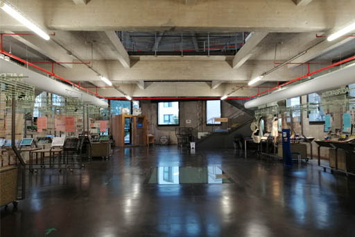

Si accedemos a Medialab por su entrada principal, tenemos que atravesar dos puertas consecutivas de madera y cristal. Al entrar nos encontramos con un espacio amplio y de gran altura, de techos y paredes de hormigón grisáceo que se abren mediante grandes ventanales al exterior. En el techo, sujeto por vigas y pilares, se ha dejado a la vista el cableado, el sistema anti-incendio y el de climatización con el fin de realzar el aspecto industrial del edificio. El suelo de toda la nave es de hormigón pulido de color negro.
En la parte central del área de la entrada, se levanta, de suelo a techo, una estructura de madera clara sin tratar, que aporta calidez a la construcción original de hormigón armado. Dentro de esta estructura, frente a la puerta principal, se forma un cubículo que alberga la mesa de información, alojando por el lado opuesto el ascensor, cuya puerta mira al Lab 0.
A la izquierda de esta estructura, encontramos el arranque de La Cosa: dos tramos de escalones de color amarillo fosforito, con barandilla de tubo metálico a ambos lados, que confluyen en un mismo rellano. El primero está frente a la puerta de entrada, paralelo al patio, y el segundo a la derecha, un poco más atrás y perpendicular al primero.
Pegado a la pared de la fachada principal, a la derecha de la puerta de entrada, se sitúa el mostrador de seguridad y a continuación, en la esquina que forma esta fachada con la de la calle Alameda, está la escalera que baja al Fablab, cuyos perfiles curvos contrastan con la geometría rectilínea del resto del edificio. Arranca frente al puesto de información y baja entre paredes de madera curvándose suavemente hacia la izquierda. Una barandilla de malla metálica protege el hueco de la escalera, que sigue el perfil de la esquina dibujando una C. Entre el hueco y las paredes de la nave, posados en el suelo, hay prototipos de proyectos realizados en el Fablab y algunas plantas.
A la derecha de la estructura de madera, entre ésta y el muro de hormigón de la nave, hay una pequeña zona de trabajo con mesas y sillas. En la parte alta del muro, se abren cuatro ventanas a la calle Alameda.
Por la parte de atrás de la estructura de madera, frente al ascensor, encontramos la pared de malla metálica que separa este espacio del Lab 0.
⇧ Volver arriba
El Lab 0 es una enorme sala diáfana, que mide unos 26 metros de largo por 13 de ancho. Es prácticamente rectangular, excepto el tramo del fondo, que cierra en chaflán formando un polígono. A la izquierda, en este chaflán hay una puerta que da al jardín del patio, y a la derecha está la escalera de hierro que sube al Lab 1. En la pared de la izquierda de la nave, hacia la mitad de la misma, hay otra puerta que da al patio.
El techo del Lab 0 se abre al nivel superior mediante dos grandes huecos rectangulares en el forjado, de 5 metros de largo por 4 de ancho cada uno, separados entre sí por una estrecha pasarela. Están ubicados uno detrás del otro centrados a lo largo de la nave y paralelos a las paredes, dando sus lados largos a la calle Alameda y al patio respectivamente. A través de ellos se puede ver la cubierta a dos aguas del piso superior.
br>Las ventanas, situadas en la parte alta del muro, son amplias para permitir la ventilación, ya que en origen aquí se encontraba el taller de fabricación de molduras de la Serrería Belga. Para preservar la historia del lugar, se conservan dos de las sierras originales del edificio, situadas junto a las paredes laterales de la nave, a la misma altura y ya cerca del chaflán. En el suelo de la nave, bajo el primer hueco en el forjado, hay un antiguo pozo de maquinaria cubierto por un vidrio blanco translúcido.
El Lab 0 es un espacio polivalente, con mesas y sillas de trabajo y 6 grandes módulos para exponer proyectos realizados en Medialab. Son unas estructuras de rejilla metálica, con ruedas, en las que se cuelgan paneles con fotografías y textos y pantallas de ordenador con vídeos.
⇧ Volver arriba
⇦ Anterior: Fablab
⇨ Siguiente: Nave Alameda - Planta 1